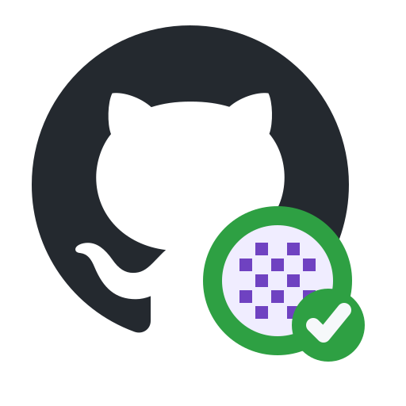
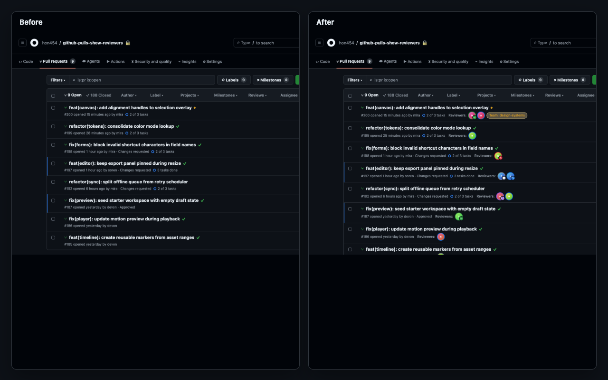
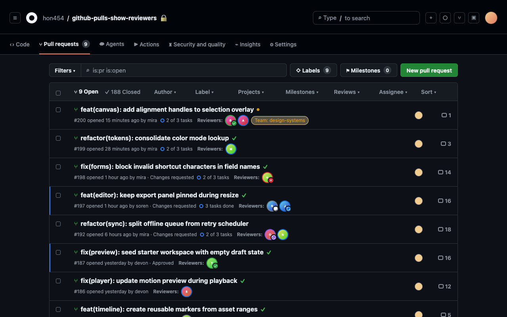

Requested people
See who is still expected to review without opening each PR.

GitHub Pulls Show Reviewers View sourceReviewer visibility for GitHub
See requested reviewers, teams, approvals, and changes requested directly in every GitHub pull request list.

The missing scan
See who is still expected to review without opening each PR.
Keep team ownership visible alongside individual reviewers.
Scan approvals, comments, dismissals, and requested changes.
Native to the list
The extension adds reviewer chips to GitHub's existing pull request rows and keeps the rest of the page unchanged.

Access with restraint
Public repositories work without a token. Private repositories use GitHub sign-in through a GitHub App with Pull requests: Read access.
Keep the list. Add the answer.